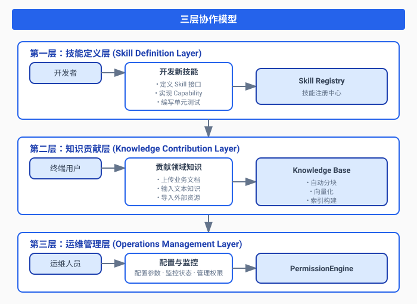
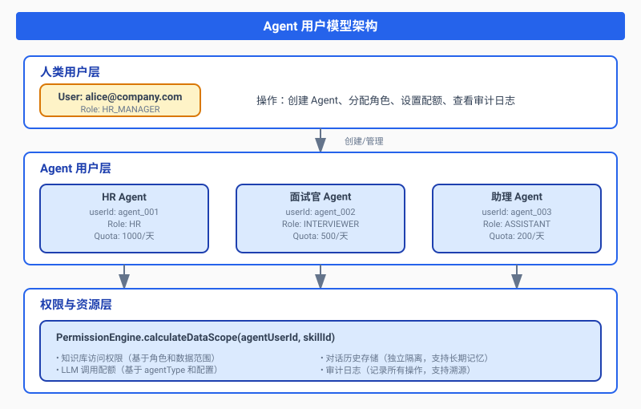
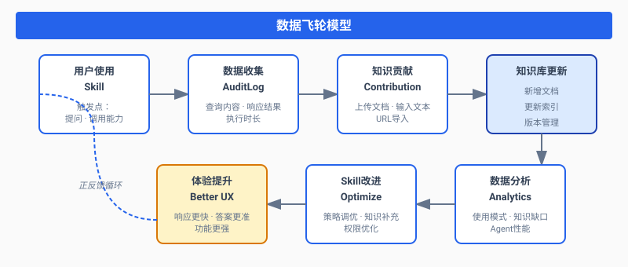
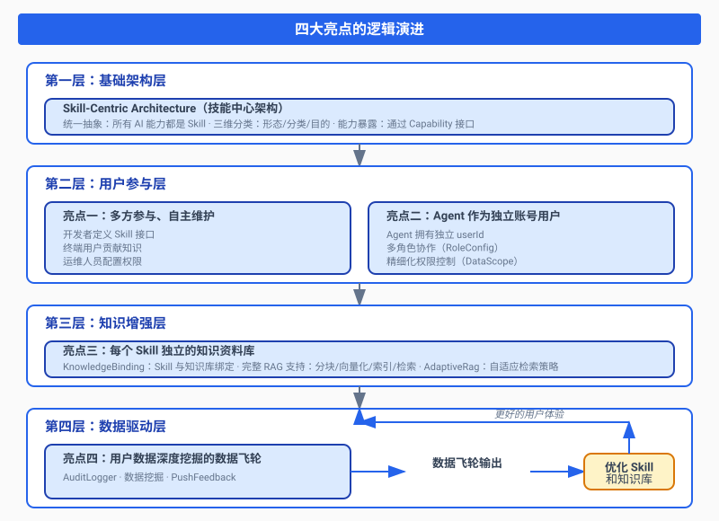
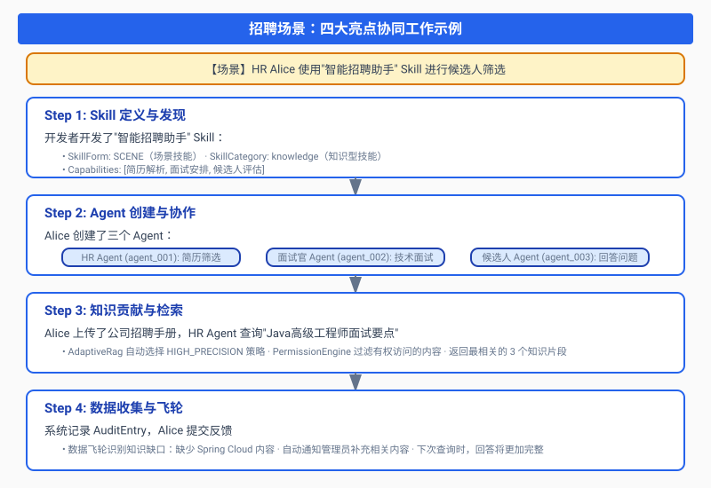
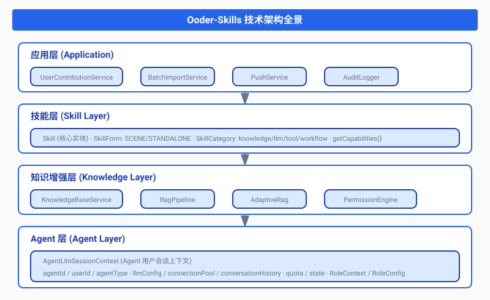

引言：从"工具时代"到"智能体时代"的架构挑战
随着大语言模型（LLM）技术的快速发展，AI应用正在从"工具时代"迈向"智能体时代"。在这个新时代，传统的软件模块化设计面临着三大根本性挑战：
- 多方协作困境：开发者、运维人员、终端用户各自为战，知识无法共享，形成信息孤岛
- AI能力孤岛：每个AI应用都有自己的知识库和工具集，难以形成生态协同
- 数据价值流失：用户交互数据无法有效回流，无法形成持续改进的闭环
Ooder-Skills 技术规范设计正是为了解决这些问题而生。它不仅仅是一套API规范，更是一个完整的技能生态系统架构——一个让开发者、运维、用户三方共同参与、共同成长的开放生态。
核心设计哲学：技能即一切（Skill-Centric Architecture）
2.1 为什么"技能"是核心？
在传统的软件架构中，我们有模块、组件、服务、微服务等各种抽象概念。但在AI原生时代，我们需要一个能够统一描述"AI能力单元"的抽象——这就是Skill（技能）。
Ooder-Skills 采用了"技能是唯一核心实体"的设计哲学。无论是简单的工具函数，还是复杂的业务场景，都被抽象为"技能"。这种统一抽象带来了三个关键优势：
- 统一抽象：降低认知成本，所有AI能力都以统一的方式描述和调用
- 形态灵活：通过
SkillForm区分场景技能（容器）和独立技能（原子） - 多维分类：通过
SkillCategory和ServicePurpose实现多维度分类和检索
2.2 技能核心接口设计
/**
* 技能 - 核心实体
*
* <p>技能是系统的唯一核心实体，场景是技能的形态之一</p>
*
* <h3>类比文件系统：</h3>
* <ul>
* <li>Skill = File/Folder（文件/文件夹）</li>
* <li>SkillForm = 是文件还是文件夹</li>
* <li>SceneType = 文件夹类型（源码包/资源文件夹/普通文件夹）</li>
* <li>SkillCategory = 文件扩展名（.doc/.exe/.flow）</li>
* </ul>
*/
public interface Skill {
// ========== 基础信息 ==========
String getSkillId(); // 全局唯一标识，类比文件路径
String getName(); // 技能名称，类比文件名
String getVersion(); // 版本
// ========== 形态维度 ==========
SkillForm getForm(); // SCENE(场景/容器) vs STANDALONE(独立/原子)
Optional<SceneType> getSceneType(); // AUTO(自驱) / TRIGGER(触发) / HYBRID(混合)
// ========== 分类维度 ==========
SkillCategory getCategory(); // knowledge/llm/tool/workflow/data/service/ui/other
// ========== 目的维度 ==========
Set<ServicePurpose> getPurposes(); // 服务范围 + 时效 + 主动性
// ========== 能力维度 ==========
List<Capability> getCapabilities(); // 技能对外暴露的能力单元
}2.3 三维分类体系：精确描述技能的能力图谱
Ooder-Skills 创新性地引入了三维分类体系，让技能可以被精确描述和检索：
| 维度 | 说明 | 类比 | 示例 |
|---|---|---|---|
| 形态维度 | 决定技能的结构 | 文件夹 vs 文件 | SCENE(招聘场景) / STANDALONE(简历解析器) |
| 分类维度 | 决定技能的技术实现 | 文件扩展名 | knowledge(知识库) / llm(大模型) / tool(工具) |
| 目的维度 | 决定技能的使用场景 | 文件用途 | PERSONAL(个人) + INSTANT(即时) + REACTIVE(被动) |
这种设计让技能生态系统具备了自描述和自组织的能力——开发者可以清晰地知道一个技能能做什么，运维可以准确地部署和配置，用户可以方便地发现和使用。
亮点一：多方参与、自主维护的技能生态
3.1 问题根源：知识鸿沟与生态割裂
在传统的软件生态中，存在着一道难以逾越的"知识鸿沟"：
- 开发者编写代码，但不了解实际业务场景，导致功能与实际需求脱节
- 运维人员管理部署，但无法优化业务逻辑，只能被动响应问题
- 终端用户最懂业务，却无法直接改进系统，只能提交反馈等待版本更新
这种割裂导致软件生态系统难以自我进化，每一次改进都需要漫长的开发-测试-发布周期。
3.2 Ooder的解决方案：三层协作模型
Ooder-Skills 通过三层协作模型打破了这一壁垒：

3.3 用户知识贡献服务：让终端用户成为生态共建者
UserContributionService 是三层协作模型的核心枢纽，它让终端用户能够直接向知识库贡献知识：
/**
* 用户知识贡献服务接口
*
* <p>提供用户向知识库贡献知识的完整能力，包括：</p>
* <ul>
* <li>文件上传 - 支持 PDF、Word、Markdown 等格式</li>
* <li>文本输入 - 直接输入结构化知识</li>
* <li>URL 导入 - 自动抓取网页内容</li>
* <li>批量导入 - 支持压缩包、目录批量导入</li>
* </ul>
*
* <p>技术实现要点：</p>
* <ul>
* <li>异步处理：大文件上传后异步进行分块和索引</li>
* <li>权限校验：只有具备写权限的用户才能贡献知识</li>
* <li>内容审核：支持人工审核和自动敏感信息检测</li>
* <li>版本管理：支持知识版本回滚和对比</li>
* </ul>
*/
public interface UserContributionService {
/**
* 上传文件到知识库
*
* <p>处理流程：</p>
* <ol>
* <li>权限校验：检查 userId 对 kbId 的写权限</li>
* <li>文件解析：根据 MIME 类型选择对应解析器</li>
* <li>内容提取：提取文本内容</li>
* <li>异步索引：提交到索引队列</li>
* </ol>
*/
Document uploadFile(String userId, String kbId, FileUploadRequest request);
Document inputText(String userId, String kbId, TextKnowledgeRequest request);
Document importFromUrl(String userId, String kbId, UrlImportRequest request);
BatchImportResult batchUpload(String userId, String kbId, List<FileUploadRequest> requests);
/**
* 获取用户贡献统计
*
* <p>用于激励机制和社区运营</p>
*/
ContributionStats getStats(String userId);
}3.4 贡献统计与激励机制：构建良性社区生态
为了鼓励用户持续参与，Ooder-Skills 内置了完整的贡献统计系统：
public class ContributionStats {
private String userId;
private int totalContributions; // 总贡献数
private long totalPoints; // 总积分（每次贡献10分）
private int level; // 等级（1-5级）
private Map<String, Long> typeCounts; // 按类型统计（file/text/url）
// 等级计算规则：
// Level 1: 0-49 分
// Level 2: 50-199 分
// Level 3: 200-499 分
// Level 4: 500-999 分
// Level 5: 1000+ 分
}这个机制形成了正反馈循环：用户贡献知识 → 获得积分和等级提升 → 解锁更多权限和功能 → 更有动力贡献知识。
亮点二：Agent 作为独立账号用户——从"工具"到"同事"
4.1 核心洞察：为什么 Agent 应该是用户？
在传统AI系统中，Agent 被视为"工具"——被动地等待调用，没有自己的身份和状态。但 Ooder-Skills 提出了一个革命性的观点：Agent 不仅仅是一个程序组件，它应该是一个独立的账号用户。
这个设计的核心洞察是：
- 身份隔离：不同 Agent 需要独立的身份来进行权限控制和审计追踪
- 状态持久化：每个 Agent 需要维护自己的对话历史、知识库访问记录
- 资源配额：需要为不同 Agent 分配独立的 LLM 调用配额
- 协作能力：多个 Agent 之间需要像人类同事一样协作
4.2 Agent 用户模型：核心隔离单元
AgentLlmSessionContext 是 Agent 用户模型的核心实现：
/**
* Agent LLM 会话上下文
* 核心隔离单元，每个Agent独立维护自己的LLM配置和对话
*
* <h3>设计要点：</h3>
* <ul>
* <li>每个 Agent 拥有独立的 userId，与人类用户平等</li>
* <li>对话历史隔离：不同 Agent 的对话互不影响</li>
* <li>资源配额隔离：防止单个 Agent 耗尽系统资源</li>
* <li>连接池共享：多个 Agent 可以共享同一 LLM 连接池</li>
* </ul>
*/
public class AgentLlmSessionContext {
// ========== 身份标识 ==========
private final String agentId; // Agent唯一标识（系统内部）
private final String userId; // 用户ID（对外身份，与人类用户平等）
private final String agentType; // Agent类型：hr-assistant / code-reviewer
// ========== LLM配置 ==========
private final String llmConfigId; // LLM配置引用
private final LlmConfig llmConfig; // 具体的LLM参数（temperature, maxTokens等）
// ========== 连接管理 ==========
private final String connectionPoolId; // 连接池ID（多个Agent可共享）
private final LlmConnectionPool connectionPool; // 连接池引用
// ========== 状态管理 ==========
private final String conversationMemoryId; // 对话存储ID
private final List<ChatMessage> conversationHistory; // 对话历史（内存缓存）
private final AgentLlmQuota quota; // Agent级配额
private volatile AgentState state; // 当前状态
// ========== 生命周期 ==========
private final long createdAt; // 创建时间
private volatile long lastActiveAt; // 最后活跃时间
private final long idleTimeout; // 空闲超时时间
}4.3 多"用户角色"协作模型：Agent 团队协同工作
在一个复杂的业务场景中，多个 Agent 可以扮演不同的角色进行协作。这通过 RoleConfig 和 RoleContext 实现：
/**
* 角色配置
*
* <p>定义场景技能中的角色信息，用于多角色协作场景</p>
*
* <h3>典型应用场景 - 招聘流程：</h3>
* <ul>
* <li>HR Agent (roleId: HR, priority: 1, required: true)</li>
* <li>面试官 Agent (roleId: INTERVIEWER, priority: 2, minCount: 1, maxCount: 3)</li>
* <li>候选人 Agent (roleId: CANDIDATE, priority: 3, required: true)</li>
* </ul>
*/
public class RoleConfig {
private String roleId; // 角色ID：MANAGER, EMPLOYEE, HR
private String roleName; // 角色显示名称
private String description; // 角色描述
private int priority; // 优先级（用于排序和决策权）
private boolean required; // 是否必需角色
private int minCount; // 最小人数（0表示可选）
private int maxCount; // 最大人数（0表示无限制）
private Map<String, Object> metadata; // 扩展属性（如技能要求、经验等级）
}4.4 Agent 用户模型架构

4.5 权限引擎：精细化访问控制的核心
每个 Agent 用户都有独立的权限计算，这是通过 PermissionEngine 实现的：
@Component
public class PermissionEngine {
/**
* 计算用户数据访问范围
*
* <p>核心逻辑：用户角色权限 ∩ Skill 权限要求 = 实际可访问范围</p>
*
* <h3>计算步骤：</h3>
* <ol>
* <li>获取用户角色和权限（包括 Agent 用户）</li>
* <li>获取 Skill 的权限要求</li>
* <li>计算交集：部门范围、资源范围、操作权限、数据敏感度</li>
* </ol>
*/
public DataScope calculateDataScope(String userId, String skillId) {
// 1. 获取用户角色和权限
UserRole userRole = userService.getUserRole(userId);
// 2. 获取Skill权限要求
SkillPermission skillPermission = skillService.getPermission(skillId);
// 3. 计算数据范围交集（取最严格的限制）
DataScope dataScope = new DataScope();
dataScope.setDepartments(intersect(userRole.getDepartments(), skillPermission.getDepartments()));
dataScope.setResources(intersect(userRole.getResources(), skillPermission.getResources()));
dataScope.setAllowedOperations(intersect(userRole.getOperations(), skillPermission.getOperations()));
dataScope.setMaxSensitivity(Math.min(userRole.getMaxSensitivity(), skillPermission.getRequiredSensitivity()));
return dataScope;
}
/**
* 将权限应用到RAG检索请求
*
* <p>在检索阶段实时过滤，确保数据安全</p>
*/
public void applyToRagSearch(DataScope scope, KnowledgeSearchRequest request) {
// 添加部门过滤器
if (!scope.getDepartments().isEmpty()) {
request.addFilter("department", scope.getDepartments());
}
// 添加资源过滤器
if (!scope.getResources().isEmpty()) {
request.addFilter("resource", scope.getResources());
}
// 添加敏感度过滤器
if (scope.getMaxSensitivity() < Integer.MAX_VALUE) {
request.addFilter("sensitivity_lte", scope.getMaxSensitivity());
}
}
}亮点三：每个 Skill 独立的知识资料库——从"共享知识"到"专属智慧"
5.1 设计动机：为什么每个 Skill 需要独立知识库？
在传统的 RAG 系统中，通常只有一个中央知识库，所有应用共享。这种设计存在三个问题：
- 权限难以细化：不同应用需要访问不同范围的知识，中央知识库难以实现细粒度控制
- 知识污染风险：一个应用的错误数据可能影响其他应用
- 性能瓶颈：所有应用竞争同一套索引和存储资源
Ooder-Skills 的解决方案是：每个 Skill 拥有独立的知识库，通过 KnowledgeBinding 实现 Skill 与知识库的一对一或一对多关联。
5.2 知识库绑定机制：灵活的知识组织
/**
* 知识库绑定信息
*
* <p>实现 Skill 与知识库的灵活关联</p>
*
* <h3>绑定模式：</h3>
* <ul>
* <li>一对一：一个 Skill 绑定一个专属知识库</li>
* <li>一对多：一个 Skill 绑定多个知识库（如分层知识库）</li>
* <li>多对一：多个 Skill 共享一个公共知识库</li>
* </ul>
*/
public class KnowledgeBinding {
private String sceneGroupId; // 场景组ID（用于场景技能）
private String kbId; // 知识库ID
private String kbName; // 知识库名称（冗余，便于展示）
private String layer; // 层级：company/department/team/personal
private long bindTime; // 绑定时间（用于审计和排序）
}5.3 知识库核心模型：完整的 RAG 数据支持
/**
* 知识库
*
* <p>为每个 Skill 提供完整的 LLM-RAG 支持</p>
*/
public class KnowledgeBase {
// ========== 基础信息 ==========
private String kbId; // 知识库ID（全局唯一）
private String name; // 名称
private String description; // 描述
private String ownerId; // 所有者ID（人类用户或 Agent 用户）
private String visibility; // 可见性：private(私有) / public(公开) / team(团队)
// ========== RAG 核心配置 ==========
private String embeddingModel; // 嵌入模型：text-embedding-ada-002 / bge-large-zh 等
private int chunkSize; // 分块大小（默认500字符）
private int chunkOverlap; // 分块重叠（默认50字符，保证语义连续性）
// ========== 统计信息 ==========
private int documentCount; // 文档数量
private long totalSize; // 总大小（字节）
private String indexStatus; // 索引状态：pending/indexing/indexed/failed
// ========== 扩展属性 ==========
private Map<String, Object> metadata; // 自定义元数据（如标签、分类）
private List<String> tags; // 标签（用于快速检索）
}5.4 自适应 RAG 检索：智能选择最优策略
这是 Ooder-Skills 的核心技术创新之一。AdaptiveRag 根据查询类型自动选择最优检索策略：
@Component
public class AdaptiveRag {
/**
* 自适应检索
*
* <p>根据查询类型自动选择最优检索策略，提升 RAG 效果</p>
*/
public RagResult adaptiveRetrieve(String query, RagContext baseContext) {
// 1. 查询分类（基于关键词匹配）
QueryType queryType = classifyQuery(query);
// 2. 根据查询类型选择策略
RetrievalStrategy strategy = selectStrategy(queryType);
// 3. 应用策略参数到上下文
RagContext optimizedContext = applyStrategy(baseContext, strategy);
// 4. 执行检索
RagResult result = ragPipeline.retrieve(optimizedContext);
// 5. 后处理（根据策略进行结果优化）
result = postProcess(result, strategy);
return result;
}
/**
* 检索策略枚举
*
* <p>不同查询类型对应不同策略参数</p>
*/
public enum RetrievalStrategy {
HIGH_PRECISION(3, 0.85f, true), // 高精确度：topK小，阈值高，启用重排序
BALANCED(5, 0.75f, true), // 平衡：适中参数
MULTI_SOURCE(10, 0.7f, true), // 多源：topK大，收集更多来源
DIVERSE(8, 0.65f, true), // 多样化：较低阈值，确保多样性
DEEP(10, 0.7f, true), // 深度：大量检索，深度推理
DEFAULT(5, 0.75f, false); // 默认：标准参数
private final int topK; // 返回结果数量
private final float threshold; // 相似度阈值
private final boolean rerankEnabled; // 是否启用重排序
}
}5.5 支持的查询类型
| 查询类型 | 关键词示例 | 策略 | 特点 |
|---|---|---|---|
| 事实查询 | 是什么、谁是、什么时候 | HIGH_PRECISION | topK=3, threshold=0.85 |
| 摘要查询 | 总结、概括、概述 | BALANCED | topK=5, threshold=0.75 |
| 比较查询 | 区别、比较、对比 | MULTI_SOURCE | topK=10, 多源聚合 |
| 创意查询 | 创意、想法、建议 | DIVERSE | 确保来源多样性 |
| 推理查询 | 为什么、原因、分析 | DEEP | 深度检索，多步推理 |
亮点四：用户数据深度挖掘的数据飞轮——从"使用数据"到"进化动力"
6.1 数据飞轮的本质：正反馈循环
数据飞轮（Data Flywheel）是一个正反馈循环：
- 用户使用 Skill 产生交互数据
- 交互数据被收集和分析
- 洞察被用于改进 Skill（知识库更新、策略优化）
- 改进后的 Skill 带来更好的用户体验
- 更多用户产生更多数据...
这个循环的关键在于：每一次用户交互都在让系统变得更智能。
6.2 数据飞轮的四个关键组件

6.3 审计日志系统：数据飞轮的数据源
AuditLogger 是数据飞轮的数据采集层，记录所有关键操作：
/**
* 审计日志条目
*
* <p>记录用户（包括 Agent 用户）的所有操作</p>
*/
public class AuditEntry {
// ========== 身份标识 ==========
private String logId; // 日志ID（全局唯一）
private String userId; // 用户ID（人类用户或 Agent 用户）
private String role; // 用户角色（用于权限分析）
// ========== 操作信息 ==========
private String operation; // 操作类型：query/invoke/upload/feedback
private String resourceType; // 资源类型：skill/kb/document/agent
private String resourceId; // 资源ID
private String details; // 操作详情（JSON格式）
// ========== 执行信息 ==========
private boolean success; // 是否成功
private long duration; // 执行时长（毫秒，用于性能分析）
private String clientIp; // 客户端IP
private String sceneId; // 场景ID（用于场景分析）
// ========== 时间信息 ==========
private long timestamp; // 时间戳
// ========== 扩展属性 ==========
private Map<String, Object> attributes; // 扩展属性（如查询内容、响应摘要）
}6.4 数据挖掘与洞察
基于审计日志和知识贡献数据，Ooder-Skills 可以进行多维度的数据挖掘：
| 分析维度 | 分析内容 | 业务价值 |
|---|---|---|
| 使用模式分析 | 哪些 Skill 最受欢迎？什么时间段使用最频繁？ | 指导资源分配和功能优化 |
| 知识缺口识别 | 用户经常查询但知识库中缺失的内容？ | 指导知识库建设和补充 |
| Agent 性能评估 | 不同 Agent 角色的响应质量？用户满意度？ | 优化 Agent 配置和角色定义 |
| 知识贡献分析 | 哪些用户是知识贡献的主力？ | 激励优质贡献者，优化社区运营 |
| 权限使用分析 | 哪些权限被频繁使用？是否存在滥用？ | 优化权限策略，提升安全性 |
6.5 数据飞轮的技术实现要点
- 异步处理：审计日志采用异步写入，避免影响主流程性能
- 数据采样：高频操作采用采样策略，平衡数据完整性和存储成本
- 隐私保护：敏感信息（如查询内容）进行脱敏处理
- 实时分析：关键指标（如错误率）实时计算，支持告警
- 离线挖掘：复杂分析（如知识缺口识别）离线批量处理
四大亮点的内在联系：构建完整的技能生态系统
7.1 从孤立到连接：四大亮点的逻辑演进
Ooder-Skills 的四大亮点不是孤立的特性，而是一个有机的整体，它们之间存在着紧密的逻辑联系：

7.2 一个完整的业务流程示例
让我们通过一个招聘场景来展示四大亮点如何协同工作：

技术架构全景图

总结与展望：从"技术规范"到"生态范式"
9.1 Ooder-Skills 的核心价值
Ooder-Skills 技术规范设计通过四大亮点，构建了一个完整的 AI 原生技能生态系统：
- 多方参与、自主维护：打破开发者、运维、用户之间的壁垒，让每个人都能为技能生态贡献力量
- Agent 即用户：将 Agent 提升为独立账号用户，支持多角色协作，实现真正的智能体协作
- Skill 独立知识库：每个 Skill 拥有独立的 LLM-RAG 能力，支持自适应检索策略
- 数据飞轮驱动：通过审计日志、数据挖掘、推送反馈形成完整的数据闭环
9.2 一种全新的 AI 应用开发范式
Ooder-Skills 不仅仅是一套技术规范，更是一种全新的 AI 应用开发范式：
| 传统范式 | Ooder-Skills 范式 |
|---|---|
| 模块是代码的集合 | 技能是可运行的 AI 能力单元 |
| 知识库是中央化的 | 每个 Skill 拥有专属知识库 |
| Agent 是工具的调用者 | Agent 是独立的用户身份 |
| 数据是日志的记录 | 数据是进化的动力 |
| 用户是系统的使用者 | 用户是生态的共建者 |
9.3 未来展望
随着多模态大模型、具身智能、边缘计算等技术的发展，Ooder-Skills 的架构将继续演进：
- 多模态技能：支持图像、音频、视频等多种模态的 Skill
- 具身智能集成：与机器人、IoT 设备深度集成
- 边缘计算支持：Skill 可以运行在边缘设备上，降低延迟
- 跨平台协作：不同平台、不同厂商的 Skill 可以无缝协作
Ooder-Skills 正在构建的，不仅仅是技术架构，更是一个AI 原生时代的技能生态系统——一个让开发者、运维、用户共同参与、共同成长的开放生态。
参考代码
本文涉及的核心代码均来自 Ooder-Skills 开源项目：
| 文件 | 说明 |
|---|---|
| AdaptiveRag.java | 自适应 RAG 检索器，根据查询类型自动选择最优策略 |
| Skill.java | 技能核心接口，定义技能的基础信息和能力 |
| RichSkill.java | Skill 的充血模型实现，添加业务逻辑和行为 |
| PermissionEngine.java | 权限引擎，计算数据访问范围并应用到 RAG 检索 |
| UserContributionService.java | 用户贡献服务接口，定义知识贡献能力 |
| UserContributionServiceImpl.java | 用户贡献服务实现，支持文件/文本/URL导入 |
| AgentLlmSessionContext.java | Agent 用户会话上下文，核心隔离单元 |
| RoleContext.java | 角色上下文，定义 AI 助手的角色和行为准则 |
| RoleConfig.java | 角色配置，用于多角色协作场景 |
| KnowledgeBase.java | 知识库实体，定义知识库的基础信息和 RAG 配置 |
| KnowledgeBaseServiceImpl.java | 知识库服务实现，提供完整的生命周期管理 |
| KnowledgeBinding.java | 知识库绑定信息，关联 Skill 和知识库 |
| RagPipeline.java | RAG Pipeline 实现，提供完整的检索增强生成流程 |
| RagContext.java | RAG 上下文，包含查询、知识库ID、检索参数等 |
| DocumentChunker.java | 文档分块服务接口，支持多种分块策略 |
| AuditEntry.java | 审计日志条目，记录用户操作详情 |
| ContributionStats.java | 贡献统计，用于激励机制 |